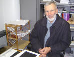

|
|
|
|
|
|
|
Autores / Authors |
|
SUMARES, Manuel

E-mail: sumares@mail.telepac.ptManuel Gonçalves Sumares, Júnior
Nascido no dia 12 de Agosto, 1943, em Sanford, Flórida, E.U.A.
1966 — B.A., Inglês, Stonehill College, North Easton, Massachusetts.
1966-67 — frequência do curso de pós-graduação de Inglês, University of Massachusetts, Amherst, Massachusetts.
1967-70 — docência de Inglês, Bishop Stang High School, North-Darmouth, Massachusetts.
1970-72 — frequência do curso de filosofia na Faculté de Philosophie da Université de Fribourg (Suíça)
1973 — B.A. (ph.), Collège Dominicain de Philosophie et de Théologie, Ottawa, Canadá.
1976 — Licence en Philosophie, Institut Catholique de Toulouse, França
1984 — Doutor em Filosofia, Universidade Católica Portuguesa.
1999 — Bth (hons), Oxford University
2003 — Master of Sacred Literature, Trinity Theological Seminary (accredited: Univ. of Liverpool)
1978 — começo de docência na Faculdade de Filosofia de Braga, da Universidade Católica Portuguesa:
1978 — a disciplina semestral, "Ontologia e hermenêutica"
1979-84 — a disciplina anual, "Hermenêutica do Texto Filosófico"
1979 — o seminário semestral, "A Simbólica do Mal de Paul Ricoeur"
1980 — o seminário semestral, "O Conflito das Interpretações de Paul Ricoeur"
1980-81 — o seminário semestral, "A Hermenêutica e Crítica das Ideologias"
1980-81 — o seminário semestral, "A Teoria Hermenêutica de Paul Ricoeur"
1981-82 — o seminário anual, "A Linguagem da Filosofia"
1982-83 — o seminário anual, "Hermenêutica, Cultura e Signos"
1983-84 — o seminário anual, "Hermenêutica, Cultura e Signos"
1984-85 — o seminário anual, "As Filosofias da Diferença"
1985-86 — o seminário anual, "Os Jogos do Desejo"
1985-97 — a discipina semestral, "Hermenêutica do Texto Filosófico"
1985-98 — a discipina semestral, "Hermenêutica Filosófica"
1985-98 — a discipina semestral, "Filosofia da Linguagem"
1987 — a discipina semestral (Curso de Pós-Graduação), "Lógica do Sentido"
1987 — o curso de reciclagem para professores liceais, "Hermenêutica"
1987-88 — o seminário anual (Curso de Pós-Graduação), "Compreender e Explicar"
1987-88 — o seminário anual, "A Filosofia Analítica"
1990-91 — o seminário anual, "Wittgenstein"
1991-92 — o seminário anual, "Lógica e Semiótica: Peirce"
1992 — a disciplina semestral (Curso de Pós-Graduação), "Lógica do Sentido"
1993-94 — o seminário anual, "A Intencionalidade Revisitada: Ryle, Searle, Dennett, Varela"
1994 — a disciplina semestral (Curso de Pós-Graduação), "A Metafísica desde uma Perspectiva Analítica"
1994-95 — o seminário anual, "A Filosofia da Psicologia: Rorty, Fodor, Dennett, Wittgenstein, Davidson"
1995-96 — o seminário anual, "Sobre a Justiça: Rawls, Lyotard, Isaias"
1996 — a disciplina semestral (Curso de Pós-Graduação), "Justiça e Prática Narrativa"
1997-98 — o seminário anual, "Tradição e Muthos"
1997-2001 — as disciplinas semestrais "Tradição e Poética I e II" na Escola das Artes, UCP- Porto
1998-1999 — o seminário semestral (Curso de Pós-Graduação), "Wittgenstein e a Filósofia Pós-Analítica"
1999 — o seminário semestral (Curso de Pós-Graduação da Linguística Cognitiva), "A Filosofia da Mente
1999-2000 — o seminário semestral, (Curso de Pós-Graduação da Linguística, Univ. do Minho), "Filosofia da Linguagem"
1999-2000 — o seminário anual, "Racionalidade e Crença"
1999-2000 — disciplina anual, "Hermenêutica Filosófica e Filosofia da Linguagem"
2000-2001 — disciplina semestral, "Hermenêutica Filosófica"
2001 — a disciplina semestral, "Filosofia da Linguagem"
2000-2001 — o seminário anual, "Mito e Tradição"
2001 — o seminário semestral, "Hermenêutica e Religião" (Curso de Pós-Graduação da Filosofia da Religião, Univ. do Minho)
2001-2002 — o seminário semestral, "Filosofia da Linguagem (Curso de Pós-Graduação da Linguística, Univ. do Minho)
2001-2002 — o seminário semestral, "A Metafísica dos Actos Mentais" (Curso de Pós´-Graduação das Ciências Cognitivas) (repetido no ano 2002-03)
2001-2002 — o seminário anual, "O Pensamento Político Americano e os seus Críticos Europeus" (repetido no ano 2002-03)
2001-2003 — a disciplina anual, "Filosofia da Linguagem e Hermenêutica Filosófica"
Encontros, Colaborações e Publicações:
(1) acerca da questão hermenêutica, encontros com professores liceais em Setembro de 1982 no Liceu Sá de Miranda, em Maio de 1983 no Liceu Alberto Sampaio, em Setembro de 1983 em Soutelo, em Abril de 1987 na Faculdade das Letras em Coimbra e em Maio de 1987 num liceu de Viseu; a orientação de um seminário sobre a hermenêutica do texto científico na Faculdade de Ciências da Universidade de Lisboa, 6-10 de Março de 1990; conferência no Collège International de Philosophie , Paris, em 19 de abril 1991, sobre Wittgenstein; a orientação de um seminário sobre a hermenêutica no Instituto de Educação e Psicologia da Universidade do Minho: 15, 22, 29 de Março; 5 de Abril 1995.
(2) colaborações nos Cursos de Verão da Faculdade de Filosofia de Braga em 1987 ("Invenção e Descoberta no Conhecimento Científico") e em 1989 ("O Racional e o Imponderável");
(3) participações no Primeiro Congresso Luso-Brasileiro de Filosofia em Fevereiro de 1981 (Braga), com a comunicação, "A Teoria Ricoeuriana da Metáfora e o Discurso Filosófico"; no encontro Fé e Cultura em Janeiro 1983 (Coimbra), com a comunicação, "O Sentido Actual de Valorização"; no XIII Congresso Internacional de Fenomenologia em Junho 1983 (Paris), com a comunicação, "Discourse, Imagination, Ontology in Paul Ricoeur"; no Colóquio Teoria do Texto em Fevereiro 1985 (Évora), com a comunicação, "Texto e Alteridade"; no Colóquio Ciência, Poésia, Mística, promovido pelo Instituto Piaget, em Abril 1994, com a comunicação, "Pragmatics and Mystics in the Thought of François Laruelle"; numa mesa-redonda sobre a obra artística e literária de Álvaro Lapa, no Museu Serralves, no Porto, em Junho 1994; no Colóquio Filosofia e Epistemologia, promovido pelo Instituto Piaget em Março 1995, com a comunicação, "Bateson e a Estética dos Actos Mentais"; no Colóquio Descartes, promovido pela Faculdade de Letras de Univ. do Porto em Novembro 1996, com a comunicação "Davidson, Monismo Anómalo e Racionalidade Narrativa"; no Colóquio Filosofia e Epistemologia, promovido pelo Instituto Piaget em Novembro 1997, com a comunicação "Analogia Fidei e a Metanarrativa Ricoeuriana"; no Colóquio "Estética, Ética e Praxis Cristã", promovido pela Faculdade de Teologia da Univ. Católica Portuguesa, Porto, em Fevereiro 1998, com a comunicação, "O Sagrado Cristão e o Seu Contexto Narrrativo"; na Semana de Teologia, promovida pelo Instituto São Tomas de Aquino, Fátima, em Agosto 1998, com a comunicação "Direitos Humanos— Ética Laica, Ética Cristã; no Colóquio Hegel, promovido pelo Centro de Filosofia da Univ. Clássica de Lisboa, em Soutelo em Setembro 1998, com a comunicação, "The Concreteness of Loss— Michael Ignatieff's Scar Tissue; no Seminário de Mestrado em Multimédia, "O Pensamento Contemporâneo e Multimédia", Escola das Artes, UCP-Porto; no Colóquio Dor e Sofrimento, promovido pela Faculdade das Letras, Univ. do Porto, em Março 2000, com a comunicação, "Depois ‘Depois de Auschwitz’: A Integração do Luto na Razão"; no Congresso da Associação da Linguística Portuguesa, promovida pela Faculdade de Filosofia de Braga, UCP, com a communicação, "Davidson, Metaphor, and Pragmatism" em Maio 2000; no Congresso da Comunicação Social, promovido pela Universidade Nova de Lisboa, com a comunicação, "Scriptural Logic and Hermeneutical Practices" em Outubro 2001; no Seminário sobre Identidade Pessoal, promovido pela Faculdade de Filosofia, com a comunicação, "Identidade Pessoal e Cristianismo" em Abril 2002; no Forum sobre Justiça, promovido pela Faculdade de Filosofia, com a lição, "Justiça: Questão Disputada—MacIntyre" em Abril 2002; no Congresso de Fenomenologia, promovido pela Universidade de Covilhã, com a comunicação, "Analogia Fidei in the Philosophy of Paul Ricoeur" em Outubro 2002. Apresentação do livro de Regis Debray, DeusItinerário (Cooperativa Árvore, Novembro 2002.)
(4) - o artigo, "Hopkins e Escotismo", Revista Portuguesa de Filosofia, 37, 1981;
- o artigo, "Acerca da Hermenêutica, de Nietzsche e da Filosofia", Farol, Maio, 1981;
- o artigo, "Teoria Ricoeuriana da Metáfora e o Discurso Filosófico", Revista Portuguesa de Filosofia, 1982;
- o prefácio, "Cultura e Dia-lógica: Uma Apresentação do Pensamento de Ortiz-Osés", em Antropologia Hermenêutica, de Andrés Ortiz-Osés, Trad. por Laura dos Santos, Editora Eros, Braga, 1983;
- o artigo, "O Sentido Actual de Valorização", Encontro: Fé e Cultura, 1984;
- o artigo, "O ‘Trabalho’ do Texto Filosófico e a sua Interpretação", Revista Portuguesa de Filosofia, 40-4, 1984 (tese complementar da tese de doutoramento);
- o artigo, "Para aquém da Dialética: Elementos para uma outra Teoria Hermenêutica", Vandoma, 1, 1985;
- o artigo, "Acerca da Tecnologia e do seu Necessário Declínio", em Técnica e Humanismo, Revista Comemorativa do 1º Centenário da Escola Carlos Amarante, 1985;
- o artigo, "Discourse, Imagination, Ontology in Paul Ricoeur", Phenomenological Inquiry, 1985;
- o artigo, "O Uno-Múltiplo", Revista Portuguesa de Filosofia, 42-3, 4, 1986;
- o artigo, "Refiguração Textual e Experiência Inter-Humana: A Comunicação e Linguagens, 3, 1986
- o livro, "Para além da Necessidade: o Sujeito e a Cultura na Filosofia de Paul Ricoeur", Editora Eros, Braga, 1987 (essencialmente a tese de doutoramento apresentada em 1984; republicada pela editora Escher, Lisboa, em 1989;
- o artigo, "Un Certain Commencement", em La Décision Philosophique, 3, 1987;
- o prefácio, "O Advento (de) a Ciência Transcendental: Uma Apresentação do Pensamento de François Laruelle", em As Filosofias da Diferença, de François Laruelle, Rés, Porto, 1988;
- o artigo, "Os Meandros do Desejo", O Semanário, 2 de Setembro de 1989;
- o artigo, "Quando Ser Sujeito não é ser Sujeitar-se", Revista Portuguesa de Filosofia, 45-2, 1989 (tradução francesa em La non-philosophie des contemporains, Kimé, Paris, 1995);
- o artigo, "Acerca de uma Tese Ricoeuriana", Revista Portuguesa de Filosofia, 46-1, 1990;
- o artigo, "Interpretação Radical: Davidson e Rorty", Revista Portuguesa de Filosofia, 48-3, 1992;
- o artigo, "Uma Ciência para os Mitos e o Transcendente", Revista Portuguesa de Filosofia, 48-4, 1992;
- o prefácio, "Decidendo e Voltando a Decidir", Modernismos, Pós-Modernismos e Anacronismos: Uma História da Poesia Portuguesa Recente, de Américo Lindeza Diogo, Cosmos, Lisboa, 1993.
- o artigo, "Imaginação e Assentimento: O que John H.Newman Poderia Querer Dizer", Communio, 10-6, 1993.
- o artigo, "Quanto aos Atributos de Deus — De Novo a Hipótese de Girard", Revista Portuguesa de Filosofia, 50-1/3, 1994.
- o livro, Quando Ser Sujeito Não É Sujeitar-Se e Outros Ensaios, Angelus Novus, Braga-Coimbra, 1993.
- o livro, Sobre Da Certeza de Ludwig Wittgenstein: Um Ensaio Introdutório, Edições Afrontamento, Porto, 1994.
- o artigo, "A Forma que Tomam os Valores: A Problemática do Educator Cristão", Communio, 14-1, 1997.
- o artigo, "Mystics and Pragmatism in the Thought of François Laruelle", Revista Portuguesa de Filosofia, 53- 1/3, 1997.
- o artigo, "Bateson e a Estética dos Actos Mentais", Apredissagem e Desenvolvimento, 37-38, 1997.
- o artigo, "A Graça de Deus de Malamud", http://www.uc.pt/ciberkiosk (Maio 1998)
- o prefácio, "Um Prefácio a Esta Obra", Essa Coisa Que Nos Olha no Espelho: René Girard e uma Leitura de um Romance de Milan Kundera, de João Henrique de Silva, Univ. Católica Portuguesa, Porto, 1999.
- o artigo, "Ética Laíca, Ética Cristã: Porque Os Direitos Humanos Enquanto Tais Dizem Pouco A Nós Cristãos Acerca Do Que A Ética Devia Ser— um argumento em forma de uma questão disputada", Cadernos— Instituto São Tomas de Aquino, 1— 1999.
- o artigo, "Davidson, Monismo Anómolo e Racionalidade Narrativa", in Actas do Colóquio Descartes, Faculdade das Letras, Univ. do Porto, 1999.
- o artigo, "A Plea for Consonance: Paul's Letter to the Church of Galatia", http//www.uc.pt/ciberkiosk (Março 1999)
- o artigo, "O Género Sexual do Messias, a Viciação Cultural e a Cruz", in Zentral Park, nº 1, Janeiro 1999, pp.19-28.
- o livro, Being-Just-In-Time: Theological Incursions, Angelus Novus, Braga/Coimbra, 2000.
- o artigo, "A Journey into Loss and Beyond the Self: On Michael Ignatieff’s Scar Tissue, in Dialektische Philosophie: Abstrakt und Konkret—Zwei Schlusselkategorian des Zeitgenossischen Denken, Eduardo Chitas, Domenico Losurdo (HRSG.), Peter Lang, 2000, pp. 181-188.
- o pós-fácio, "A Família: Elástica ou Rígida? Reflexões Sobre os Aforismos de Adília Lopes, in Irmã Barata, Irmã Batata de Adília Lopes, Angelus Novus, Braga/ Coimbra, 2000.
- o artigo, "Metaphor, Davidson, and Pragmatism" in Linguagem e Cognição: A perspectiva da Linguagem Cognitiva, org. Augusto Soares da Silva, Associação Portuguesa da Linguística, Braga, 2001.
- O artigo, "Depois ‘Depois de Auschwitz’: A Integração do Luto na Razão" in A Dor e Sofrimento: Abordagens, Actas do Colóquio Internacional Realizado no Âmbito do Porto 2001, Editora Campo das Letras, Porto, 2001.